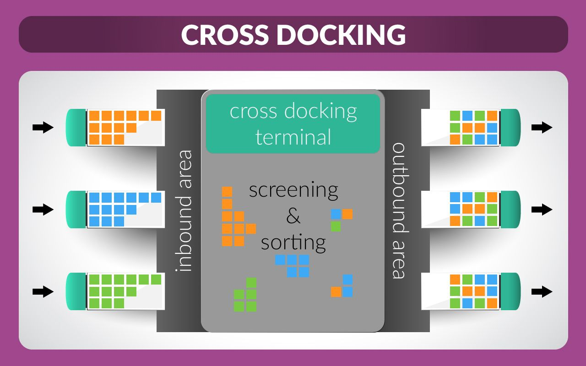
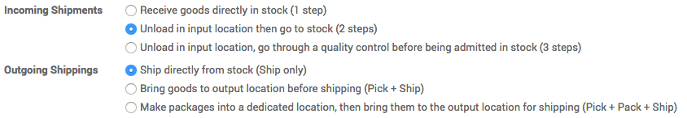

Cross dock area is temporarily area where we are not storing any product instead just managing place according to delivery for further customer. This will save lot of time for inter warehouse transfer and storing process. We are managing our products with docking area where product directly place from supplier location and transfer this to gate pass for customer delivery.
Note
For more information on how to organise your warehouse, read What is cross docking and is it for me?
Configuration
Warehouse and routes
In the Inventory module, open , then in Routes, select Advanced routing of products using rules, then click on Apply.

Open , then open the warehouse you want to cross-dock from and click on Edit.
In the Warehouse Configuration tab, select:
- Incoming Shipments: Unload in input location then go to stock (2 steps)
- Outgoing Shipments: Ship directly from stock (Ship only)
then click on Save.
This steps has generated a cross-docking route that you can see in .
Cross Docking Route
We will use the route Buy for first part of the flow and create a route for the remaining part:

Each of the procurement rule will now be configured. Cross Dock location is created as an internal physical location.


Product with cross dock
We have created the Vegetable Fennel product and assigned the routes created above as well as the Buy route.
We have also specified a supplier and a minimum order rule which is needed for replenishment of a stockable product.